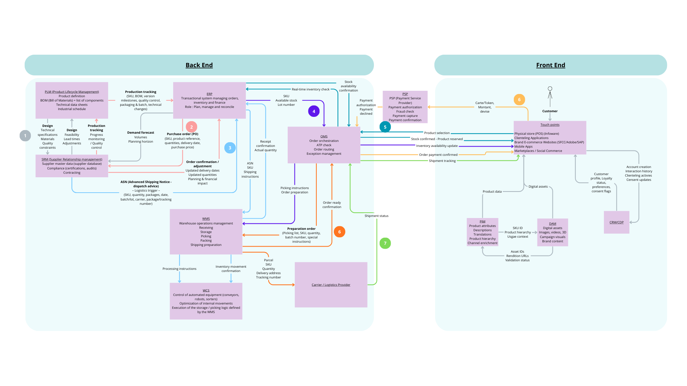

Retail Information System Architecture
End-to-end mapping of a retail IT ecosystem inspired by experience at LVMH BT: product lifecycle, order orchestration, logistics, payment, and omnichannel customer touchpoints.
A selection of dashboards, research and design projects reflecting analytical rigor and structured thinking.

End-to-end mapping of a retail IT ecosystem inspired by experience at LVMH BT: product lifecycle, order orchestration, logistics, payment, and omnichannel customer touchpoints.

3,900 transactions ($233K) — customer behavior, seasonality, product performance.

4,143 employees (3 countries) — headcount, attrition, recruitment, satisfaction.

Salary benchmarking by experience, location and role — structured insights.

Editorial system: grid, hierarchy and art direction for a magazine concept.

Adoption barriers: regulation, cost, security and organizational resistance.

N=101 study: trust, usefulness and algorithmic fatigue — hypothesis testing.